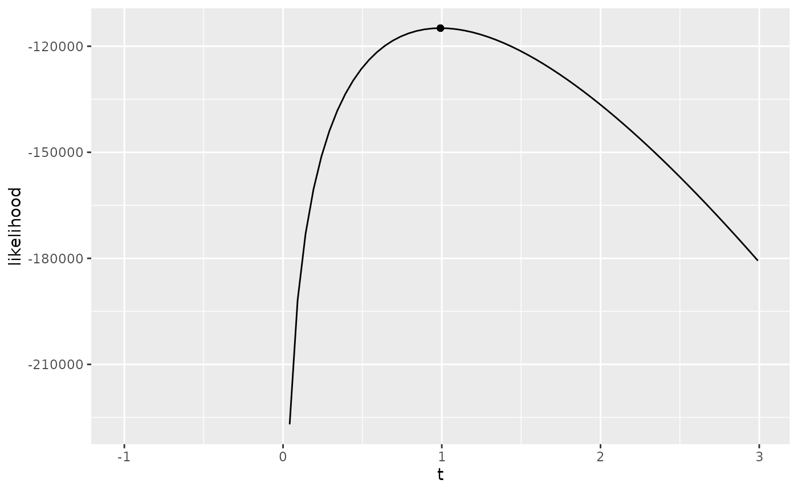

Series system with exponentially distributed component lifetimes
exponential.RmdIntroduction
The R package series.system.estimation.masked.data is a framework for estimating the parameters of latent component lifetimes from masked data in a series system.
Masked data
Masked data is given by an i.i.d. sample of system lifetime data and plausible candidate sets that contain the failed node.
The R package series.system.estimation.masked.data contains several simulated masked data sets. For example, a series system with \(3\) exponentially distributed component lifetimes is stored in exp_series_md_1:
print(exp_series_md_1)
#> Latent variables: k t1 t2 t3
#> # A tibble: 1,000 × 8
#> t k t1 t2 t3 x1 x2 x3
#> <dbl> <dbl> <dbl> <dbl> <dbl> <lgl> <lgl> <lgl>
#> 1 0.144 2 0.281 0.144 0.266 TRUE TRUE FALSE
#> 2 0.0105 1 0.0105 0.0141 0.0633 TRUE FALSE TRUE
#> 3 0.0363 2 0.105 0.0363 0.545 TRUE TRUE FALSE
#> 4 0.00972 1 0.00972 0.251 0.0960 TRUE FALSE TRUE
#> 5 0.0377 3 0.0937 0.0943 0.0377 TRUE FALSE TRUE
#> 6 0.0958 3 0.283 0.391 0.0958 FALSE TRUE TRUE
#> 7 0.169 3 0.197 1.01 0.169 FALSE TRUE TRUE
#> 8 0.270 3 0.322 0.371 0.270 FALSE TRUE TRUE
#> 9 0.299 3 0.390 0.401 0.299 TRUE FALSE TRUE
#> 10 0.00794 2 0.524 0.00794 0.120 FALSE TRUE TRUE
#> # … with 990 more rowsYou can get help on any object in series.system.estimation.masked.data using the built-in help. For instance, to get information on the data set exp_series_md_1, type ?exp_series_md_1 in your R console.
Statistical model for masked data
The principle object of study is the series system consisting of \(m\) components. We are interested in estimating the component lifetimes from masked data. The masking comes in two independent forms:
Censored system failure times, e.g., right-censoring.
Masked component cause of failure, which comes in the form of candidate sets, where the candidate sets satisfy the following set of conditions:
\(C_1\): The index of the failed component is in the candidate set, i.e., \(\Pr\{K_i \in \mathcal{C}_i\} = 1\).
\(C_2\): The probability of \(C_i\) given \(K_i\) and \(T_i\) is equally probable when the failed component varies over the components in the candidate set, i.e., \(\Pr\{\mathcal{C}_i=c_i|K_i=j,T_i=t_i\} = \Pr\{C_i=c_i|K_i=j',T_i=t_i\}\) for any \(j,j' \in c_i\).
-
\(C_3\): The masking probabilities are independent of \(\boldsymbol{\theta}\), i.e., \(\Pr\{\mathcal{C}_i=c_i|K_i=j,T_i=t_i\}\) is not a function of \(\boldsymbol{\theta}\).
That means, whatever the generative mechanism underlying \(\mathcal{C}_1,\ldots,\mathcal{C}_n\), it has no explicit knowledge of \(\boldsymbol{\theta}\), but the \(i\) candidate set \(\mathcal{C}_i\) may depend on the realizations of \(T_{i 1},\ldots,T_{i n}\) and other factors not explicitly in the statistical model we have described.
Bernoulli candidate model that satisfies \(C_1\), \(C_2\), and \(C_3\)
As long as we satisfy conditions \(C_1\), \(C_2\), and \(C_3\), our reduced likelihood function that assumes those conditions obtains the same MLEs as the full likelihood function.
In what follows, we describe our Bernoulli candidate set model that generates candidate sets that satisfy these conditions.
| md_bernoulli_candidate_C1_C2_C3 | R Documentation |
Bernoulli candidate model that is a function of component cause of failure.
Description
Bernoulli candidate model that is a function of component cause of failure k and parameters m and p, where if component cause of failure is indexed by j, then j is in the candidate set and otherwise the component indexed by j is in the candidate set with probability specified by p, which may either by a procedure for sampling from a distribution with a codomain [0,1] or a constant function.
Usage
md_bernoulli_candidate_C1_C2_C3(md, m, p = function(n) runif(n))Arguments
md
|
masked data, has a column |
m
|
integer, number of components in the candidate set. |
p
|
a function or procedure |
Here is the source code for md_bernoulli_candidate_C1_C2_C3:
md_bernoulli_candidate_C1_C2_C3 <- function(md,m,p=function(n) runif(n))
{
stopifnot(!is.null(md$k))
n <- nrow(md)
stopifnot(n > 0)
x <- matrix(NA,nrow=n,ncol=m)
u <- matrix(runif(m*n),nrow=n)
gam <- p(n)
for (i in 1:n)
{
for (j in 1:m)
{
x[i,j] <- ifelse(md$k[i]==j,
T,
u[i,j] < gam[i])
}
}
x <- tibble::as_tibble(x)
colnames(x) <- paste0("x",1:m)
md %>% dplyr::bind_cols(x)
}Exponential series system
The most straightforward series system to estimate is the series system with exponentially distributed component lifetimes.
Suppose an exponential series system with \(m\) components is parameterized by the following R code:
\(\boldsymbol{\theta }= (1, 1.25, 1.75)'\). Then, the component assigned to index \(j\) has an exponentially distributed lifetime with a failure rate \(\theta_j\), e.g., \(\theta_2 = 1.25\) is the failure rate of the component indexed by \(2\).
Let’s simulate generating the lifetimes of \(n=300\) of these series systems:
n <- 500000
md <- tibble(t1=rexp(n,theta[1]),
t2=rexp(n,theta[2]),
t3=rexp(n,theta[3])) %>%
md_series_lifetime()
print(md)
#> # A tibble: 500,000 × 5
#> t1 t2 t3 k t
#> <dbl> <dbl> <dbl> <int> <dbl>
#> 1 0.0880 0.242 0.368 1 0.0880
#> 2 0.875 0.593 2.35 2 0.593
#> 3 1.21 0.304 0.426 2 0.304
#> 4 0.346 1.39 0.310 3 0.310
#> 5 1.37 0.939 0.179 3 0.179
#> 6 0.0472 0.684 0.202 1 0.0472
#> 7 2.68 0.319 0.461 2 0.319
#> 8 0.304 0.355 0.502 1 0.304
#> 9 0.732 0.345 1.51 2 0.345
#> 10 0.355 0.674 2.21 1 0.355
#> # … with 499,990 more rowsIn the above, we used the function md_series_lifetime, to decorate the masked data md consisting of \(m=3\) component lifetimes to masked data that also includes the series system failure time (column \(t\)) and the comoponent cause of failure (column \(k\)). To get more help on it, type ?md_series_lifetime.
Right-censoring
We simulate right-censoring, with a right-censoring time chosen by the probability \(\Pr\{T_i > \tau\} = 0.75\), with:
q <- 0.25
tau <- rep(-(1/sum(theta))*log(q),n)
md <- md %>% md_series_lifetime_right_censoring(tau)Masked component cause of failure (candidate sets)
We simulate candidate sets using the Bernoulli candidate model with an appropriate set of parameters to satisfy conditions \(C_1\), \(C_2\), and \(C_3\):
md <- md %>% md_bernoulli_candidate_C1_C2_C3(m, function(n) rep(.3,n))
print(md)
#> # A tibble: 500,000 × 11
#> t1 t2 t3 k t tau s delta x1 x2 x3
#> <dbl> <dbl> <dbl> <int> <dbl> <dbl> <dbl> <lgl> <lgl> <lgl> <lgl>
#> 1 0.0880 0.242 0.368 1 0.0880 0.347 0.0880 FALSE TRUE FALSE FALSE
#> 2 0.875 0.593 2.35 2 0.593 0.347 0.347 TRUE FALSE TRUE FALSE
#> 3 1.21 0.304 0.426 2 0.304 0.347 0.304 FALSE TRUE TRUE FALSE
#> 4 0.346 1.39 0.310 3 0.310 0.347 0.310 FALSE FALSE TRUE TRUE
#> 5 1.37 0.939 0.179 3 0.179 0.347 0.179 FALSE FALSE FALSE TRUE
#> 6 0.0472 0.684 0.202 1 0.0472 0.347 0.0472 FALSE TRUE TRUE FALSE
#> 7 2.68 0.319 0.461 2 0.319 0.347 0.319 FALSE FALSE TRUE FALSE
#> 8 0.304 0.355 0.502 1 0.304 0.347 0.304 FALSE TRUE FALSE TRUE
#> 9 0.732 0.345 1.51 2 0.345 0.347 0.345 FALSE FALSE TRUE TRUE
#> 10 0.355 0.674 2.21 1 0.355 0.347 0.347 TRUE TRUE FALSE TRUE
#> # … with 499,990 more rowsLog-likelihood of \(\theta\) given masked data
The reduced log-likelihood function (the log of the kernel of the likelihood function) is given by \[ \ell(\theta) = -\left(\sum_{i=1}^{n} t_i\right) \left(\sum_{j=1}^{m} \theta_j\right) + \sum_{i=1}^{n} \log\left(\sum_{j \in c_i} \theta_j\right). \]
The following log-likelihood constructor, md_loglike_exp_series_C1_C2_c3, is implemented using minimally sufficient statistics, which significantly improves the computational efficiency of computing the log-likelihood.
?md_loglike_exp_series_C1_C2_C3| md_loglike_exp_series_C1_C2_C3 | R Documentation |
Generates a log-likelihood for an exponential series system with respect to parameter theta for masked data with candidate sets that approximately satisfy conditions C1, C2, and C3.
Description
Generates a log-likelihood for an exponential series system with respect to parameter theta for masked data with candidate sets that approximately satisfy conditions C1, C2, and C3.
Usage
md_loglike_exp_series_C1_C2_C3(md)Arguments
md
|
masked data |
We compute the log-likelihood function as a function of the masked data md with:
l <- md_loglike_exp_series_C1_C2_C3(md)The log-likelihood function contains the maximum amount of information about parameter \(\boldsymbol{\theta}\) given the sample of masked data md satisfying conditions \(C_1\), \(C_2\), and \(C_3\).
Suppose we do not know that \(\boldsymbol{\theta }= (1, 1.25, 1.75)'\). With the log-likelihood, we may estimate \(\theta\) with \(\hat\theta\) by solving \[
\hat{\boldsymbol{\theta}} = \operatorname{argmax}_{\boldsymbol{\theta }\in \Omega} \ell(\theta),
\] i.e., finding the point that maximizes the log-likelihood on the observed sample md. This is known as maximum likelihood estimation (MLE). We typically solve for the MLE by solving \[
\nabla \ell|_{\boldsymbol{\theta}=\hat{\boldsymbol{\theta}}} = \boldsymbol{0}.
\] We use the iterative method known as the gradient ascent to solve this, \[
\boldsymbol{\theta}^{(n+1)} = \boldsymbol{\theta}^n + \alpha_n \nabla \ell(\boldsymbol{\theta}^n),
\] where \(\alpha_n\) is chosen to approximately maximize \(\ell(\theta^{(n+1))}\) by using backtracking line search.
We use the function mle_gradient_ascent provided by the R package algebraic.mle with the appropriate arguments. We find \(\hat{\boldsymbol{\theta}}\) by running the following R code:
scr <- md_score_exp_series_C1_C2_C3(md)
mle <- mle_gradient_ascent(l=l,theta0=theta,score=scr)
theta.hat <- point(mle)
summary(mle)
#> Maximum likelihood estimator, of type mle_numerical ,
#> is normally distributed with mean
#> [,1]
#> [1,] 0.997
#> [2,] 1.257
#> [3,] 1.757
#> and variance-covariance
#> [,1] [,2] [,3]
#> [1,] 1.65e-05 -2.83e-06 -3.07e-06
#> [2,] -2.83e-06 1.97e-05 -3.44e-06
#> [3,] -3.07e-06 -3.44e-06 2.53e-05
#> ---
#> The asymptotic mean squared error 6.15e-05
#> The asymptotic 95% confidence interval is
#> 2.5 % 97.5 %
#> 1 0.99 1.00
#> 2 1.25 1.26
#> 3 1.75 1.77
#> The log-likelihood is -113849
#> The AIC is 227703The function md_gradient_ascent returns an mle object, which has various methods implemented for it, e.g., confint (computes the estimators confidence interval). In the above, we see use of the summary method, which takes an mle object and prints out a summary of its properties. We let theta.hat be given by the point method, which obtains the point \(\hat{\boldsymbol{\theta}}\).
We see that \[ \hat{\boldsymbol{\theta}} = (0.997, 1.257, 1.757)'. \] Recall that the true parameter \(\boldsymbol{\theta }= 1, 1.25, 1.75\).
If we let the third argument in the log-likelihood function be fixed at \(\hat\theta_3 = 1.757)\), then we may profile the log-likelihood function over the first two parameters:
prof <- function(theta1) { l(c(theta1,theta.hat[2],theta.hat[3])) }
data <- tibble(x=seq(theta.hat[1]-2,theta.hat[1]+2,.05))
data$y <- numeric(nrow(data))
for (i in 1:nrow(data))
data$y[i] <- prof(data$x[i])
#> Warning in log(sum(theta[md$C[i, ]])): NaNs produced
#> Warning in log(sum(theta[md$C[i, ]])): NaNs produced
#> Warning in log(sum(theta[md$C[i, ]])): NaNs produced
#> Warning in log(sum(theta[md$C[i, ]])): NaNs produced
#> Warning in log(sum(theta[md$C[i, ]])): NaNs produced
#> Warning in log(sum(theta[md$C[i, ]])): NaNs produced
#> Warning in log(sum(theta[md$C[i, ]])): NaNs produced
#> Warning in log(sum(theta[md$C[i, ]])): NaNs produced
#> Warning in log(sum(theta[md$C[i, ]])): NaNs produced
#> Warning in log(sum(theta[md$C[i, ]])): NaNs produced
#> Warning in log(sum(theta[md$C[i, ]])): NaNs produced
#> Warning in log(sum(theta[md$C[i, ]])): NaNs produced
#> Warning in log(sum(theta[md$C[i, ]])): NaNs produced
#> Warning in log(sum(theta[md$C[i, ]])): NaNs produced
#> Warning in log(sum(theta[md$C[i, ]])): NaNs produced
#> Warning in log(sum(theta[md$C[i, ]])): NaNs produced
#> Warning in log(sum(theta[md$C[i, ]])): NaNs produced
#> Warning in log(sum(theta[md$C[i, ]])): NaNs produced
#> Warning in log(sum(theta[md$C[i, ]])): NaNs produced
#> Warning in log(sum(theta[md$C[i, ]])): NaNs produced
#> Warning in log(sum(theta[md$C[i, ]])): NaNs produced
data %>% ggplot(aes(x=x,y=y)) + geom_line() +
geom_point(aes(x=theta.hat[1],prof(theta.hat[1]))) +
labs(x="t",y="likelihood")
#> Warning: Removed 21 row(s) containing missing values (geom_path).
Due to sampling variability, different runs of the experiment will result in different outcomes, i.e., \(\hat{\boldsymbol{\theta}}\) has a sampling distribution. We see that \(\hat{\boldsymbol{\theta}} \neq \boldsymbol{\theta}\), but it is reasonably close. We may measure this sampling variability using the variance-covariance matrix, bias, mean squared error (MSE), and confidence intervals.
Sampling distribution of the MLE
The MLE \(\hat{\boldsymbol{\theta}}\) as a function of a random sample of masked data, and is thus a random vector. Theoretically, \(\hat{\boldsymbol{\theta}}\) converges in distribution to the multivariate normal with a mean \(\boldsymbol{\theta}\) and we may estimate the variance-covariance with the inverse of the observed Fisher matrix, which is given by \[ J(\hat{\boldsymbol{\theta}}) = -\nabla^2 l|_{\hat{\boldsymbol{\theta}}}. \] Thus, \[ \hat{\boldsymbol{\theta}} \sim \mathcal{N}(\boldsymbol{\theta},J^{-1}(\hat{\boldsymbol{\theta}})). \]
Asymptotically, \(\hat{\boldsymbol{\theta}}\) is the UMVUE, i.e., it is unbiased and obtains the minimum sampling variance. An estimate of the variance-covariance may be obtained with:
(V.hat <- vcov(mle))| 0 | 0 | 0 |
| 0 | 0 | 0 |
| 0 | 0 | 0 |
Bias and mean squared error
We would like to measure the accuracy and precision of \(\hat{\boldsymbol{\theta}}\). In statistical literature, the bias \[ \operatorname{b}(\hat{\boldsymbol{\theta}}) = E(\hat{\boldsymbol{\theta}}) - \boldsymbol{\theta} \] is a measure of accuracy and variance is a measure of precision.
The mean squared error, denoted by \(\operatorname{MSE}\), is a measure of estimator error that incorporates both the bias and the variance, \[ \operatorname{MSE}(\hat{\boldsymbol{\theta}}) = \operatorname{trace}\bigl(\operatorname{vcov}(\hat{\boldsymbol{\theta}})\bigr) + \operatorname{b}^2(\hat{\boldsymbol{\theta}}). \]
Since \(\hat{\boldsymbol{\theta}}\) is asymptotically unbiased and minimum variance, \[
\lim_{n \to \infty} \operatorname{MSE}(\hat{\boldsymbol{\theta}}) =
\operatorname{trace}\bigl(\operatorname{vcov}(\hat{\boldsymbol{\theta}})\bigr).
\] Thus, for sufficiently large samples, \(\operatorname{MSE}(\hat{\boldsymbol{\theta}})\) is approximately given by the trace of the estimated variance-covariance matrix:
If we have a sample of \(n\) MLEs, \(\hat{\boldsymbol{\theta}}^{(1)},\ldots,\hat{\boldsymbol{\theta}}^{(n)}\), then we may estimate both the bias and the MSE respectively with the statistics \[ \hat{\operatorname{b}} = \frac{1}{n} \sum_{i=1} \hat{\boldsymbol{\theta}}^{(i)} - \boldsymbol{\theta} \] and \[ \widehat{\operatorname{MSE}} = \frac{1}{n} \sum_{i=1}^n (\hat{\boldsymbol{\theta}}^{(i)} - \boldsymbol{\theta}) (\hat{\boldsymbol{\theta}}^{(i)} - \boldsymbol{\theta})'. \] We may then compare these statistics, \(\hat{\operatorname{b}}\) and \(\widehat{\operatorname{MSE}}\), with the asymptotic bias \((\boldsymbol{0})\) and the asymptotic \(\operatorname{MSE}\).
Let us compute estimates of the bias, variance-covariance, and mean squared error as a function of sample size \(n\) using Monte Carlo simulation. Note that this is similar to the Bootstrap, except we know \(\boldsymbol{\theta}\).
A primary statistic is the confidence interval. A \((1-\alpha)100\%\) confidence interval for \(\theta_j\) may be estimated with \(\hat\theta_j \pm z_{1-\alpha/2} \sqrt{\hat{V}_{j j}}\). We provide a method for doing this calculation:
as_tibble(confint(mle)) %>% mutate(length=.[[2]]-.[[1]])| 2.5 % | 97.5 % | length |
|---|---|---|
| 0.99 | 1.00 | 0.013 |
| 1.25 | 1.26 | 0.015 |
| 1.75 | 1.76 | 0.017 |
How does this compare to the confidence intervals given that the candidate sets are generated using the Bernoulli candidate model with a different choice of parameters? First, we generate a new MLE using a different sample of masked data, new.md:
new.md <- tibble(
t1=rexp(n=n,rate=theta[1]),
t2=rexp(n=n,rate=theta[2]),
t3=rexp(n=n,rate=theta[3])) %>%
md_series_lifetime() %>%
md_bernoulli_candidate_C1_C2_C3(m=3,p=function(n) rep(.333,n))
l <- md_loglike_exp_series_C1_C2_C3(new.md)
scr <- md_score_exp_series_C1_C2_C3(new.md)
mle.new <- mle_gradient_ascent(l=l,theta0=theta,score=scr)Let’s compare the lengths of the confidence intervals:
as_tibble(confint(mle)) %>% mutate(length=.[[2]]-.[[1]])| 2.5 % | 97.5 % | length |
|---|---|---|
| 0.99 | 1.00 | 0.013 |
| 1.25 | 1.26 | 0.015 |
| 1.75 | 1.76 | 0.017 |
as_tibble(confint(mle.new)) %>% mutate(length=.[[2]]-.[[1]])| 2.5 % | 97.5 % | length |
|---|---|---|
| 0.996 | 1.01 | 0.012 |
| 1.247 | 1.26 | 0.013 |
| 1.741 | 1.76 | 0.015 |
We see that the lengths of the confidence intervals are significantly shorter.
If no information is provided about the component cause of failure in a series system with \(m\) components, then the \(m_0\) estimator is not unique and does not converge to \(\boldsymbol{\theta}\).
Estimating the variance-covariance using the Bootstrap method
Alternatively, we could estimate \(\boldsymbol{\theta}\) with \(B\) simulated draws from the MLEs that satisfy \[ \operatorname{argmax}_{\boldsymbol{\theta }\in \boldsymbol{\Omega}} \ell(\boldsymbol{\theta}|\mathcal{D_i}) \] where \(\mathcal{\boldsymbol{D_i}}\) is a random sample from the empirical distribution \(\{(S_i,\delta_i,C_i)\}_1^n\). We call this the Bootstrap.
Assuming the above solution to the MLE equation is unique, this gives us a single point \(\hat{\boldsymbol{\theta}}_{(i)}\) when conditioned on the simulated masked data \(\boldsymbol{D_i}\).
algebraic.mle::bias(mle)
#> [1] 0 0 0 0 0 0 0 0 0Sampling distribution of the MLE
We know that \[ \hat{\boldsymbol{\theta}} \sim \mathcal{N}\bigl(\boldsymbol{\theta},J^{-1}(\boldsymbol{\theta})\bigr). \] We can estimate the sampling distribution of \(\hat{\boldsymbol{\theta}}\) with \(\mathcal{N}\bigl(\hat\theta,J^{-1}(\hat{\boldsymbol{\theta}})\bigr)\). This makes it trivial to estimate any other function of \(\boldsymbol{\theta}\) by sampling from the approximation:
In Figure 2, we show contour plots of the first two components for the MLE sample.
Estimating component cause
Another characteristic we may wish to estimate is the probability that a particular component in an observation caused the system failure.
We wish to use as much information as possible to do this estimation. We consider three cases:
We have masked data
mdwith candidate sets and system failure times and seek to estimate the node failure probabilities of observations in this data. This case provides the most accurate estimates of the node probability failures, as have both system failure times and candidate sets as predictors of the node failure.We have a new observation of a system failure time and an estimate of \(\theta\) from
md. In this case, we cannot condition on candidate sets, since the observation does not include that information. However, we do have a system failure time.We have an estimate of \(\boldsymbol{\theta}\) from
mdbut wish to predict the node failure of a system that has failed, but we do not know when it failed.
We consider case 1 described above where we have masked data md that includes both candidate sets and system failure times.
In this case, we are interested in \[ f_{K_i|C_i,T_i}(j|c_i,t_i,\boldsymbol{\theta}) = \frac{h_j(t;\boldsymbol{\theta_k})}{\sum_{j' \in c_i} h_{j'}(t_i;\boldsymbol{\theta_{j'}})}, \] which in the exponential series case simplifies to \[ f_{K_i|C_,T_i}(j|c_i,t_i,\boldsymbol{\theta}) = \frac{\boldsymbol{\theta_j}}{\sum_{j' \in c_i} \boldsymbol{\theta_{j'}}}. \]
We decorate md with this probability distribution with the decorator function md_series_component_failure_probability, which accepts masked data as input and returns the masked data with columns for component cause of failure probabilities given by k1,…,km.
#h <- list(function(t) theta.hat[1],
# function(t) theta.hat[2],
# function(t) theta.hat[3])
#md %>% md_series_component_failure_probability_decorator(h)We notice that every row over the columns k1, k2, and k3 given a specific candidate set are the same. This is as expected, since in the case of the exponential series, the component failure rates are constant with respect to system failure time.
If we already had an estimate of \(\boldsymbol{\theta}\) and we sought to predict the failed components from only system lifetime data, we would just let the candidate sets contain all of the component indexes.
Also, observe that the component failure probabilities \[ \hat{\boldsymbol{k}}_i(\boldsymbol{\theta}) = (\hat{k}_1,\hat{k}_2,\hat{k}_3)' \] is a random vector whose sampling distribution under the right conditions is a multivariate normal whose \(j\) component is given by \[ \hat{k}_j \sim \mathcal{N}(f_{K_i|T_i}(j|t_i,\boldsymbol{\theta}),\boldsymbol{\Sigma}_i). \] We can simulate \(n\) draws from \(\hat{\boldsymbol{\theta}}\) and then apply the above statistic of interest, generating the data \[ \hat{\boldsymbol{k}}^{(1)},\ldots,\hat{\boldsymbol{k}}^{(n)}. \]